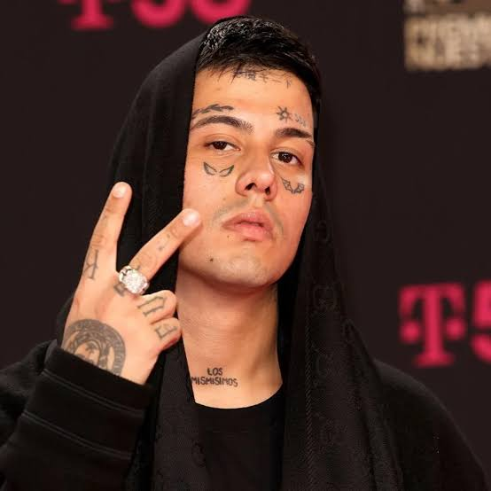
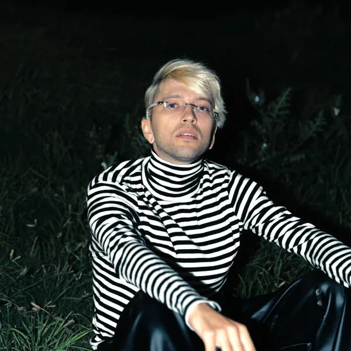
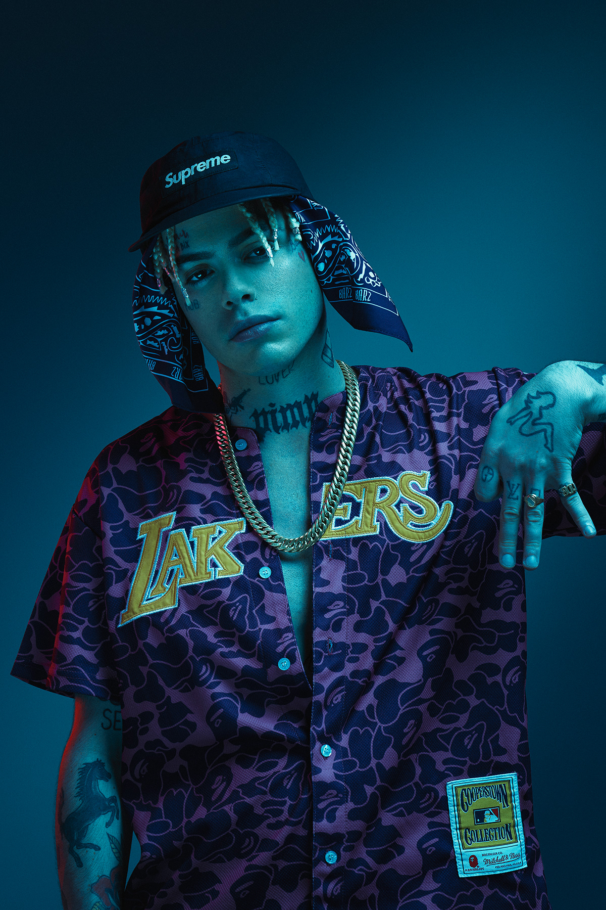

- Duki 
- C.R.O
- Khea
- Bhavi 
- Franky 
Mauro Ezequiel Lombardo Quiroga (Almagro, Buenos Aires; 24 de junio de 1996), conocido artísticamente como Duki, es un rapero y compositor argentino.12 Se le acredita el haber popularizado el género del trap a nivel nacional, siendo precursor de la explosión del trap latino en Argentina y Sudamérica. Es nombrado en varios medios como el "Líder del movimiento urbano" de su país.3
.jpg)
Tomás Manuel Campos (Cutral Co, Neuquén; 11 de septiembre de 1998),1 conocido artísticamente como C.R.O, es un cantante, rapero y compositor argentino de rap, trap, boom bap, rock, pop, electrónica y reguetón.1 Ha registrado colaboraciones con artistas como Duki, Lil Xan, Kevin Roldán, Neo Pistea, Lit Killah, FMK, Bizarrap, Cruz Cafuné, Prok, Kidd Keo, Lucho SSJ, YSY A...
.jpg)
Ivo Alfredo Thomas Serue (Virreyes, Buenos Aires; 13 de abril de 2000), conocido artísticamente como Khea, es un rapero y compositor argentino. Comenzó su carrera en 2017, lanzando uno de sus primeros sencillos titulado «Loca», una de las canciones más icónicas del trap argentino, junto a Duki, Cazzu y Bad Bunny. Un mes después participó de «She Don't Give a FO» de Duki, otro éxito internacional.
Bhavi es un cantante de trap nacido como Indra Bhalavan en Bélgica, el 22 de octubre de 1997, y radicado en Argentina. En 2017 comenzó a grabar y al poco tiempo se conectó con Mueva Records, la productora con la cual trabaja.
Francisco Sebastián Argíz, conocido en el ambiente musical como Franky Style, es una rapero argentino. Nació en la provincia de Neuquén, Argentina. Ganó popularidad con el grupo argentino de rap Terrorista Style.